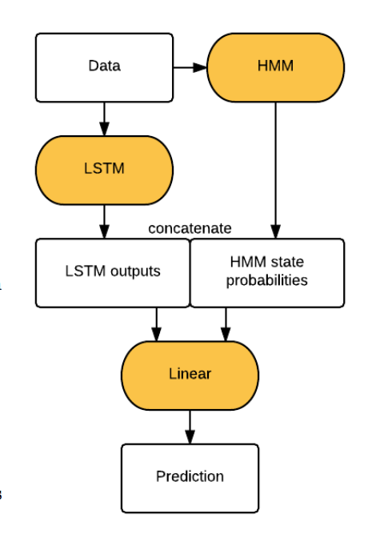
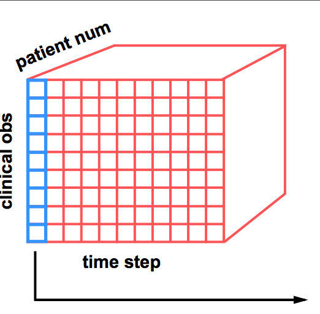
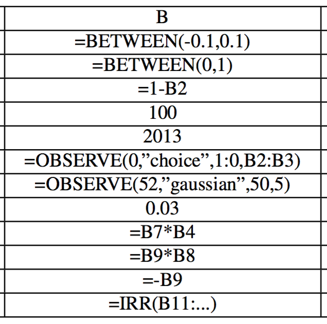
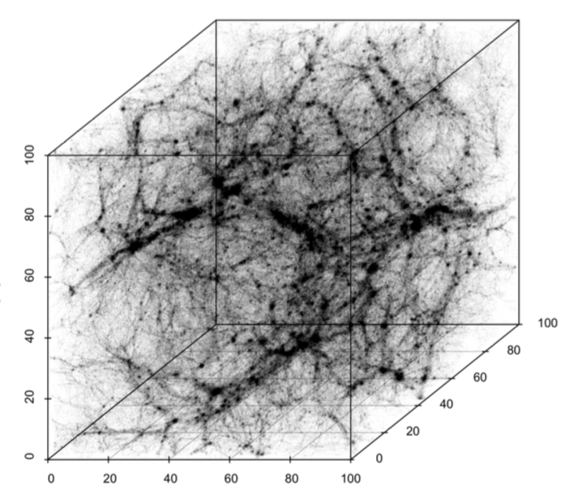
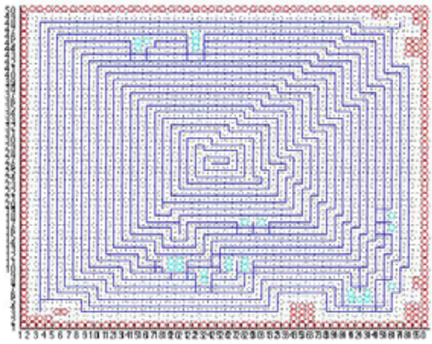
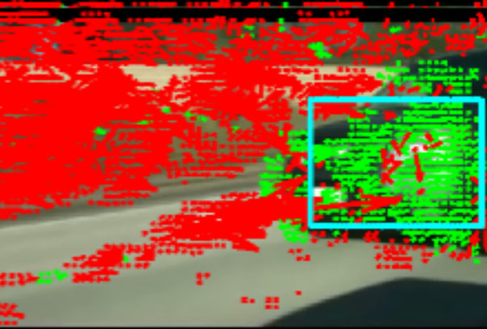

|

|
Beyond Sparsity: Tree Regularization of Deep Models for Interpretability
The lack of interpretability remains a key barrier to the adop- tion of deep models in many applications. In this work, we explicitly regularize deep models so human users might step through the process behind their predictions in little time. Specifically, we train deep timeseries models so their class- probability predictions have high accuracy while being closely modeled by decision trees with few nodes. On several real and synthetic examples, we demonstrate that this new tree- based regularization is distinct from simpler L2 or L1 penal- ties, resulting in more human-interpretable models without sacrificing predictive power.
Mike Wu,
Michael C. Hughes,
Sonali Parbhoo,
Maurizio Zazzi,
Volker Roth,
Finale Doshi-Velez
AAAI 2018
NIPS 2017 TIML Workshop (Oral Presentation)
preprint
| poster
|
talk
| code
|
|

|
Predicting intervention onset in the ICU with switching statespace models
The impact of many common intensive care unit interventions have not fully quantified, especially in heteroge- nous patient populations. We train unsupervised switching state autoregressive models on vital signs from the public MIMIC-III database to capture patient movement between physiological states. We compare our learnt belief states to static demographics and raw vital signs in the prediction of five ICU treatments: ventilation, vasopressor adminis- tration, and three transfusions. While custom classifiers can only target one specific clinical event, our model learns physiological states which can help with many interventions. Our learning of robust patient state representations presents an exciting path towards future evidence-driven adminsitration of key clinical interventions.
Maryzeh Ghassemi,
Mike Wu,
Michael C. Hughes,
Finale Doshi-Velez
AMIA CRI, 2017
Nominee for AMIA Clinical Informatics Research Award
pdf
| code
|
|
|
Understanding vasopressor intervention and weaning: Risk prediction in a public heterogeneous clinical time series database
The widespread adoption of electronic health records allows us to ask evidence-based questions about the need for and benefits of specific clinical interventions in critical-care settings across large populations. We investigated the prediction of vasopressor administration and weaning in the intensive care unit. Vasopressors are commonly used to control hypotension, and changes in timing and dosage can have a large impact on patient outcomes. We considered a cohort of 15 695 intensive care unit patients without orders for reduced care who were alive 30 days post-discharge. A switching-state autoregressive model (SSAM) was trained to predict the multidimensional physiological time series of patients before, during, and after vasopressor administration. The latent states from the SSAM were used as predictors of vasopressor administration and weaning.
Mike Wu,
Maryzeh Ghassemi,
Mengling Feng,
Leo Anthony Celi,
Peter Szolovits,
Finale Doshi-Velez
Journal of the American Medical Informatics Association, 2016
pdf
| code
|
|

|
Spreadsheet Probabilistic Programming
Spreadsheet workbook contents are simple programs. Because of this, probabilistic programming techniques can be used to perform Bayesian inversion of spreadsheet computations. What is more, existing execution engines in spreadsheet applications such as Microsoft Excel can be made to do this using only built-in functionality. We demonstrate this by developing a native Excel implementation of both a particle Markov Chain Monte Carlo variant and black-box variational inference for spreadsheet probabilistic programming. The resulting engine performs probabilistically coherent inference over spreadsheet computations, notably including spreadsheets that include user-defined black-box functions.
Mike Wu,
Yura Perov,
Frank Wood,
Hongseok Yang
NIPS Salon des Refusés, 2016
pdf
|
|

|
Topological Hypothesis Tests for Large-Scale Structure of the Universe
In order to understand the physics of the Universe, theoretical and computational cosmologists develop large-scale simulations that allow for analyzing the LSS under varying physical assumptions. In particular, different realizations of dark matter, warm and cold, are thought to lead to contrasting velocities of cosmic structure formation. However, rigorous comparisons and inference on such complicated structures can be problematic. We present a framework for hypothesis testing of LSS using persistent homology. The randomness in the data is transferred to randomness in the topological summaries, which provides an infrastructure for inference. We present several test statistics using persistence diagrams, carry-out a simulation study to investigate the suitableness of the proposed test statistics, and finally apply the inference framework to study topological disparities between assumptions of warm and cold dark matter.
Mike Wu,
Jessica Cisewski,
Larry Wasserman,
Brittany Fasy,
Mark Lovell,
Wojciech Hellwing
Work in progress
preprint
| code
|

|
Financial Market Prediction Using Self-Organizing Maps
Given financial data from popular sites like Yahoo and the London Exchange, the presented paper attempts to model and predict stocks that can be considered "good investments". Stocks are characterized by 125 features ranging from gross domestic product to EDIBTA, and are labeled by discrepancies between stock and market price returns. An artificial neural network (Self-Organizing Map) is fitted to train on more than a million data points to predict "good investments" given testing stocks from 2013 and after.
Mike Wu
ArXiv, 2015
pdf
| code
|

|
Edge-based Crowd Detection from Single Image Datasets
This paper describes the design of a crowd-based facial detection and recognition system using only optical features, allowing for robustness in tracking characterizations with applications in security and data extraction. Implementation is divided into three parts: packing information regarding a given image into edge pixels, segmentation into object groups, and circular segmentation. Detection is achieved by filtering the circles and characterizing those with features similar to that of a normal face. Preliminary facial recognition is described by matching feature vectors to each facial region and matching over subsequence image frames. Algorithms were implemented in MATLAB and testing was performed with a low-resolution video camera. Through a number of trials, results show good detection and tracking abilities given small to medium crowd sizes. Several limitations will be addressed.
Mike Wu,
Madhu Krishnan
International Journal of Computer Science Issues, 2013
pdf
|
|

|
Autonomous Mapping and Navigation through Utilization of Edge-based Optical Flow and Time-to-Collision
This paper proposes a cost-effective approach to map and navigate an area with only the means of a single, low resolution camera on a "smart robot", avoiding the cost and unreliability of radar/sonar systems. Implementation is divided into three main parts: object detection, autonomous movement, and mapping by spiraling inwards and using the A* Path finding algorithm. Object detection is obtained by editing Horn-Schunck's optical flow algorithm to track pixel brightness factors to subsequent frames, producing outward vectors. These vectors are then focused on the objects using Sobel edge detection. Autonomous movement is achieved by finding the focus of expansion from those vectors and calculating time to collision which are then used to maneuver. Algorithms are programmed in MATLAB and implemented with LEGO Mindstorm NXT 2.0 robot for real-time testing with a low-resolution video camera. Through numerous trials and diversity of the situations, validity of results is ensured to autonomously navigate and map a room using solely optical inputs.
Madhu Krishnan,
Mike Wu,
Young Kang,
Sarah Lee
ARPN Journal of Engineering and Applied Sciences, 2012
pdf
|
|

|
Position and Vector Detection of Blind Spot motion with the Horn-Schunck Optical Flow
The proposed method uses live image footage which, based on calculations of pixel motion, decides whether or not an object is in the blind-spot. If found, the driver is notified by a sensory light or noise built into the vehicle's CPU. The new technology incorporates optical vectors and flow fields rather than expensive radar-waves, creating cheaper detection systems that retain the needed accuracy while adapting to the current processor speeds.
Stephen Yu,
Mike Wu
ArXiv, 2011 (Printed 2016)
pdf
| code
|